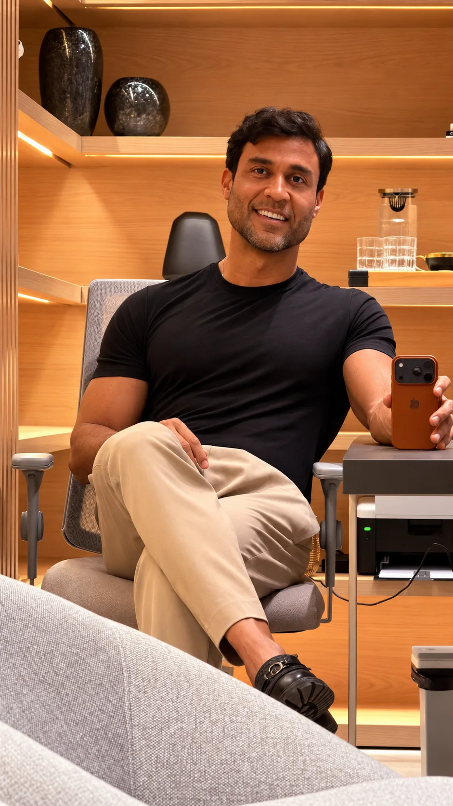

Sobre mim
Cuidar de como você vive hoje, sem perder de vista os anos que vêm pela frente.
Na minha atuação em Nutrologia, quero entender o que pode melhorar sua saúde e sua qualidade de vida agora — mais disposição, força, sono, equilíbrio metabólico e bem-estar.
Ao mesmo tempo, penso no que estamos construindo para os próximos anos. Por isso, uno escuta, ciência, exames e tecnologia para acompanhar sua saúde de perto e tomar decisões que façam sentido para cada momento da sua vida.
Médico com atuação em Nutrologia
Formação
- Medicina — Universidade Federal da Bahia
- Formação em Nutrologia — ABRAN/SP
- Atenção Básica em Saúde — Universidade Federal do Maranhão
Registro profissional
CRM-BA 28.988
RQE 22.160 — Medicina do Trabalho
Hoje (e nos próximos anos)
O futuro da sua saúde
também é construído agora.
Um acompanhamento médico para cuidar da sua saúde, disposição e capacidade física hoje, construindo bases para um envelhecimento mais saudável.
Salvador · São Paulo